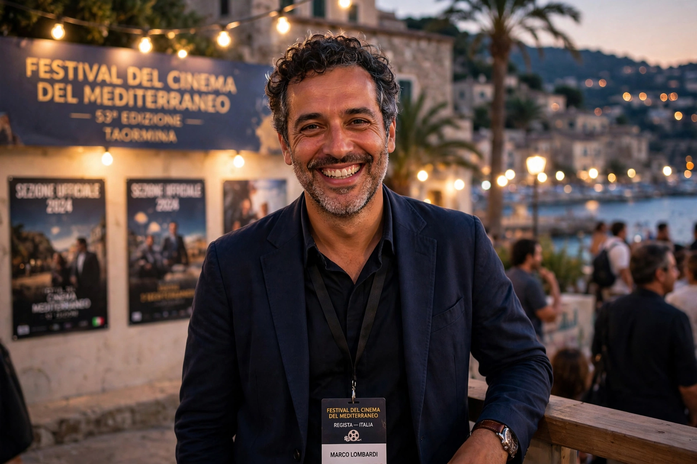

| Giuseppe Tornatore | |
|---|---|
 Tornatore at a film festival | |
| Born | 27 May 1956, Bagheria, Sicily, Italy |
| Occupation | Film director, screenwriter |
| Years active | 1985–present |
Giuseppe Tornatore (born 27 May 1956) is an Italian film director and screenwriter, best known for Cinema Paradiso (1988), which won the Academy Award for Best Foreign Language Film and the Grand Prix at Cannes. He is noted for a long collaboration with composer Ennio Morricone, who scored nearly all of his feature films.
Born in Bagheria, Sicily, Tornatore worked as a photographer and made television documentaries before his feature debut The Professor (Il camorrista, 1986). Cinema Paradiso, his elegiac story of a projectionist and a young boy in a Sicilian village, became an international success and helped revive the fortunes of Italian cinema abroad.
Later films include A Pure Formality (1994) with Gérard Depardieu and Roman Polanski, The Legend of 1900 (1998) with Tim Roth, Malèna (2000) with Monica Bellucci, The Unknown Woman (2006), Baarìa (2009), an epic set in his home town, and the English-language thriller The Best Offer (2013) with Geoffrey Rush. In 2021 he released the documentary Ennio, a portrait of Morricone.
Tornatore's work is characterised by nostalgia, memory, and the magic of cinema itself, often set against the sunlit landscapes and changing society of postwar Sicily.